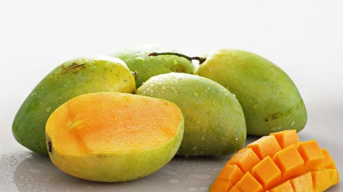

Tentang buah.com
Mangga
Mangga atau Mempelam adalah nama sejenis buah, demikian pula nama pohonnya. Mangga termasuk ke dalam genus Mangifera, yang terdiri dari 35-40 anggota dari famili Anacardiaceae. Nama "Mangga" berasal dari bahasa Tamil, mankay, yang berarti man "pohon mangga" + kay "buah". Kata ini dibawa ke Eropa oleh orang-orang Portugis dan diserap menjadi manga (bahasa Portugis), mango (bahasa Spanyol dan Inggris) dan lainnya. Mangga berasal dari daerah di sekitar perbatasan India dengan Burma, dan mangga telah menyebar ke Asia Tenggara sekitar 1500 tahun yang silam. Buah ini dikenal pula dalam berbagai bahasa daerah, seperti pelem atau poh (Jw.), Poh (Bl.), dan Paok (Sas.)
- Mengatur tekanan darah
- Meningkatkan kekebalan tubuh
- Memperkuat tulang
- Memurnikan darah
- Mencegah kanker
- Membantu Mencegah Asma
Daftar harga
| Mangga Apel | Harga | |
|---|---|---|
| Per Kilo | Per Biji | |
| Mangga Manalagi | 50.000 | 5.000 |
| Mangga Alpukat | 60.000 | 6.000 |
| Mangga Madu | 70.000 | 7.000 |
| Mangga Harum anis | 55.000 | 5.500 |